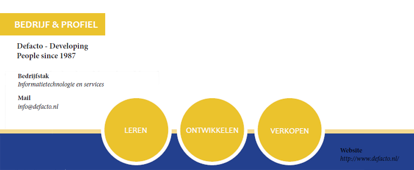

<div class="row medium-8 large-7 columns">
  <div class="blog-post">
    <h3 class="title--bloghead"> Defacto bedrijfsprofiel <small class="title--blogdate">Defacto - Developing People since 1987</small></h3>
    
    <p class="text--blog">Defacto beweegt zich al jaren als toonaangevend ontwikkelaar van innovatieve software in het werkveld van Opleiden en Ontwikkelen. De kernactiviteiten bestaan uit het digitaliseren en automatiseren van opleidingsafdelingen, bedrijfsacademies en opleidingsinstituten.<br>
        Ik heb mij alleen bezig gehouden met CAPP LMS Software, het helpt medewerkers of klanten om op optimale wijze hun op te leiden en hun vakmanschap te bevorderen. CAPP is dus een Learning Management System met Elektronische Leeromgeving.
        <br><br><b>Maatschappelijke positie.</b>
          <br>Defacto is een bedrijf met ongeveer 40 werknemers. Dit bedrijf kent een platte organisatie en hoge mate van transparantie. De verantwoordelijkheid ligt op de werkvloer bij de mensen zelf en wordt door de mensen zelf ook bewaakt. Het bedrijf gelooft dat het belangrijk is om in een leuke omgeving te kunnen werken, daarom zijn de werktijden flexibel, het gaat uiteindelijk om de kwaliteit die je aflevert. En elke vrijdagmiddag verdiepen medewerkers zich in nieuwe technieken, producten, etc.
        <br><br><b>Maar wat deed ik?</b><br>
          <br>Elke klant heeft zijn eigen CAPP omgeving, die naar hun bedrijf stijl ontworpen moet worden. Bijvoorbeeld Tui werkt veel met de kleuren rood en blauw en Duo met verschillende kleuren blauw en wit. Ook alle bedrijven willen deze omgeving na hun smaak ingedeeld hebben. Mijn taak was om via Css alles te veranderen tot de klant tevreden was. Dit betekende ook dat ik bugs uit het systeem moest halen, met Devexpress moest leren omgaan en met sitemaps werken.
      	<br><u>Devexpress</u> is een bedrijf die helpt met software development tools.
        <br><u>Sitemap</u> is een pagina of document waarin links naar alle pagina's van een website staan, die meestal op onderwerp dan wel relevantie zijn gesorteerd. Dit is een handig hulpmiddel voor bezoekers en zoekmachines om bepaalde pagina's te vinden op een site.
        <br><br><b>Waarom ben ik al grafisch vormgever naar dit bedrijf gegaaan?</b>
          <br>Elk devolopment bedrijf heeft natuurlijk designers nodig. In dit bedrijf zijn er twee designers, tevens zijn ook beiden afgestudeerd van Minerva. De bedoeling is dat ik bij dit bedrijf help met designen en met de programma's Html, Css en Java Script leer om te gaan.</p>
  </div>
</div>
